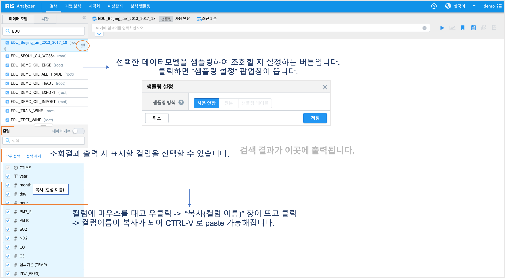
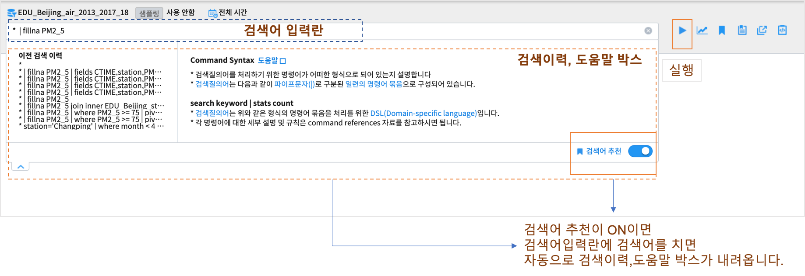
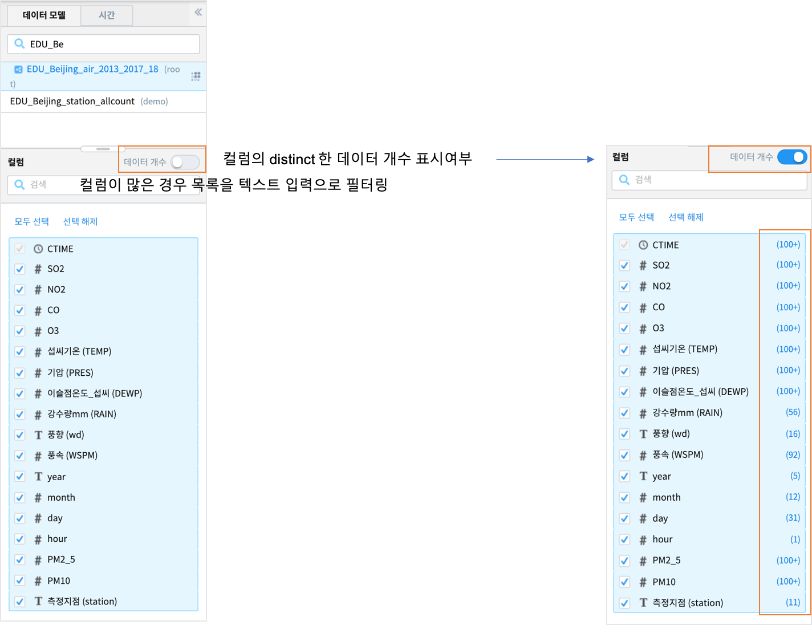

검색¶
검색 화면 개요¶
{kind=link}
번호 |
구분 |
설명 |
|---|---|---|
1 |
모델/시간 설정 |
검색하고자 하는 데이터 모델과 데이터의 검색 기간을 설정합니다. |
2 |
컬럼 목록 |
선택한 데이터 모델의 컬럼들을 표시,표시여부를 선택합니다. |
3 |
검색 바 |
검색어를 입력하는 입력란과 부가기능(이동,분석탬플릿저장,불러오기,새탭에서 열기 등)버튼 컨트롤 |
4 |
결과 화면 |
검색 조건에 따른 검색 결과를 출력하는 영역 |
데이터모델 및 시간, 샘플링 설정¶
{kind=link}
구분 |
설명 |
|---|---|
사용안함 |
샘플링 기능 사용하지 않고 원본 테이블 대상으로 조회 |
원본 |
설정한 샘플링 비율을 바탕으로 샘플링 적용한 결과 반환 |
샘플링 테이블 |
샘플링 테이블을 대상으로 조회 |
검색어 입력¶
검색어 입력 및 이전검색 이력, 도움말 창¶
{kind=link}
검색 결과 분석¶
컬럼¶
{kind=link}
이벤트¶
{kind=link}
{kind=link}
{kind=link}
검색에 추가: 현재 검색 조건에 “station=’Aotizhongxin’” 이 자동으로 추가되어 재검색 결과가 화면에 출력됩니다.
검색에서 제외: 현재 검색 조건에 “station!=’Aotizhongxin’” 이 자동으로 추가되어 재검색 결과가 화면에 출력됩니다..
새로운 검색: 기존 검색과 무관하게 다른 컬럼을 선택하여 재검색을 수행하고자 할 경우에 사용할 수 있습니다.
{kind=link}
{kind=link}
부가 기능¶
번호 |
구분 |
설명 |
|---|---|---|
1 |
실행 |
검색 작업을 실행하는 버튼. 실행 중에는 중지 버튼으로 바뀝니다. |
2 |
이동 |
데이터모델, 시간설정, 필터링검색어 내용 그대로 피벗,고급시각화,이상탐지 화면으로 이동할 수 있는 메뉴 버튼 |
3 |
분석 템플릿 |
현재 데이터모델, 시간, 검색어를 템플릿으로 저장합니다. |
4 |
불러오기 |
검색 이력 및 분석탬플릿을 불러와서 실행할 수 있습니다. |
5 |
새 창으로 열기 |
현재 설정 그대로 새 창(탭)에서 검색 작업을 실행합니다.여러 개의 창으로 작업할 때 유용합니다. |
6 |
분석코드 복사 |
Rest API 로 검색어 실행 결과를 받을 수 있는 예제코드를 클립보드에 복사합니다. R,Python,Node.js 코드 |
{kind=link}
{kind=link}